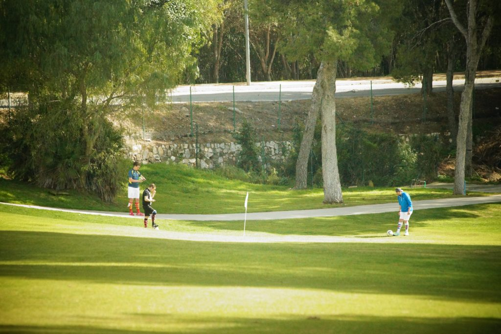
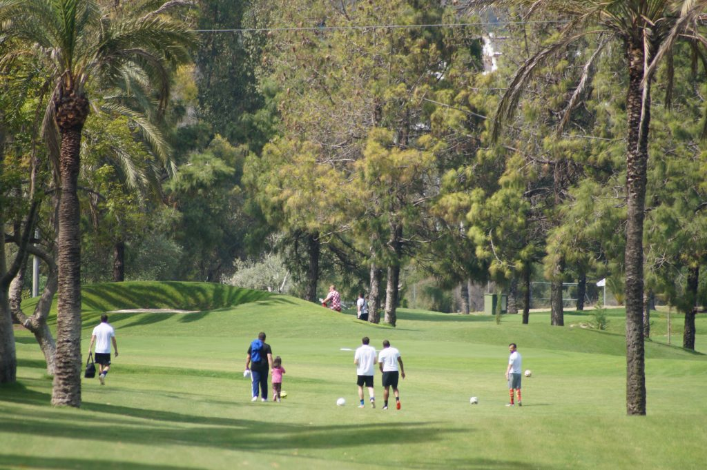

Footgolf is a precision sport, in which players kick a spherical association football into a cup in as few shots as possible. The name is a portmanteau of football and golf, and the game combines the two sports, being more closely related to golf.
Footgolf has stealidy been taken over the world! The activity consists on playing footbal with your foot and a football on a regular golf course according teh Golf Rules
There are 2 potential locations for the activity: * La Dama de Noche Golf - located in Puerto Buas and jus a stone throw away from Marbella. This is a 9 hole course which offers great fun for startes and regular players.This course offer evertything Footgolf has to offer, technical holes protected by bunkers as well as long distances hals


Rate of the activity per item:
Rates valid for 2020
Net rates for Split communication
For a group of minimum 20 pax.
Cutting Edge Events management fee including in the detailed rates
VAT included.
No reservation has been done. Availability upon request.